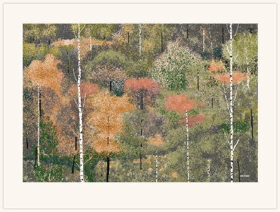

Modern Examples
This webpage describes modern examples of MS Paint
This webpage describes modern examples of MS Paint
Modern Artists Who Use MS Paint
Hal Lasko
Hal Lasko was a typographer, who later gained internet fame for his MS Paint work, which depicted lush landscapes, and imaginative larger than life pieces of art. He received his first PC in the 1980s, which was loaded with Microsoft Paint. Hal continued to hone his skills on the program, despite suffering from we macular degeneration, which is a age related chronic eye disase that severely limits the center of the patient's vision. Below are his works.

Hal Lasko's Works:
Looking Up

Treescapes
The Thriller

Pat Hines
Pat Hines is a modern artist who honed his MS Paint skills while working overnight shifts at the desk of a hospital receptionist job. He now works as an Operations Specialist at a law firm in Boston, but still manages to have time to keep producing incredible MS Paint based artwork. he released a novel in 2016 called "Camp Redblood And The Essential Revenge", which showcases older teenager kids at a summer camp banding together to get revenge for younger kids who were horribly pranked.

Pat Hines's Works:
The Force Awakens MS Paint Poster

Bill Gates Holding A Tablet

Camp Redblood Cover

Sonofjay
Reddit user who goes by the alias, "Sonofjay", has produced fantastic portraits of pop culture icons only using MS Paint. He has stated that although he has used more complicated programs in the past, he still prefers the challenge of using simpler tools to create great works of art.

Sonofjay's Works:
Morgan Freeman MS Paint Portrait

He-Man MS Paint Portrait

Ninja Turtles MS Paint Portrait

Concha Garcia Zaera
Concha Garcia Zaera is an 87 year old grandmother who enjoys using MS Paint to create landscape and scenic art.

Concha Garcia Zaera's Works:
Concha Garcia Zaera Bridge Scene

Concha Garcia Zaera Town Square Scene

Concha Garcia Zaera Valley Scene

Sources Used
- https://www.themanual.com/culture/masterpieces-microsoft-paint/
- https://www.buzzfeed.com/terripous/amazing-microsoft-paint-art?utm_source=dynamic&utm_campaign=bffbbuzzfeedvideo&ref=bffbbuzzfeedvideo&utm_term=.sjb6l4z45J#.jvQo5NENAV
- https://www.hallasko.com/
- https://www.reddit.com/user/sonofjay/
- https://hallasko.com/pages/about
- https://www.bbc.com/news/technology-40715545
- https://sonofjay.imgur.com/
- https://www.boredpanda.com/grandmother-microsoft-paint-art-concha-garcia-zaera-spain/